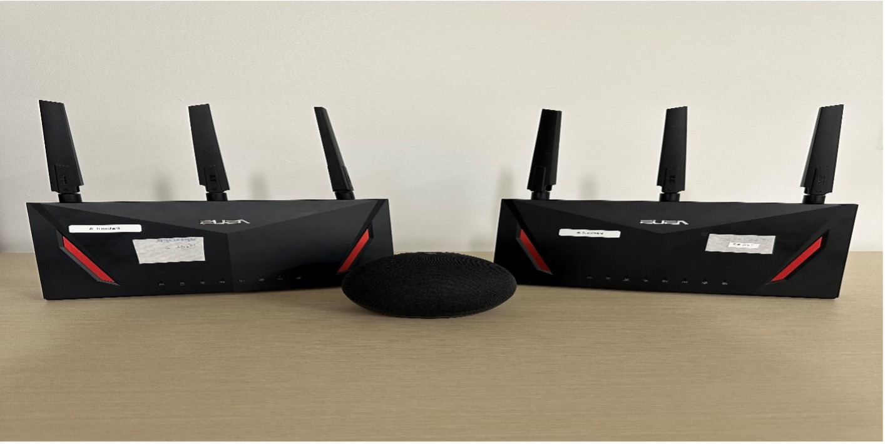
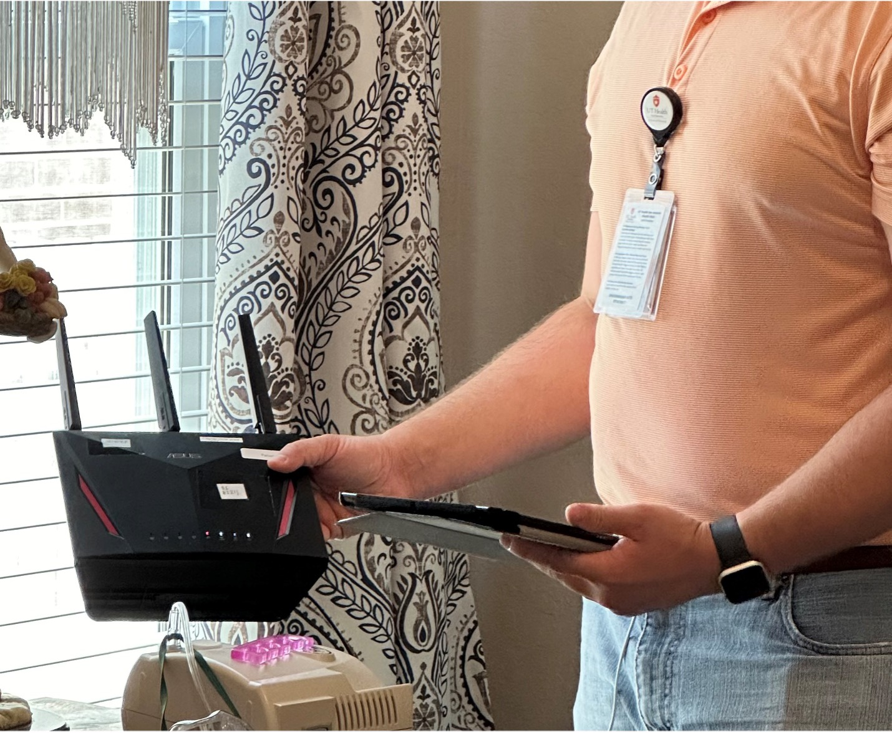
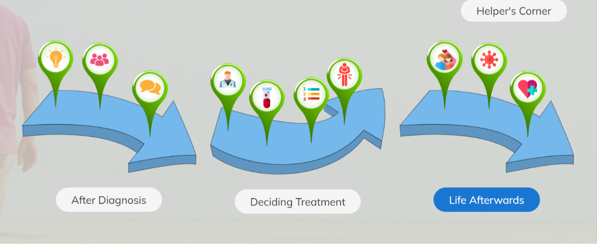

AURA
Connecting Audio and Radio Sensing Systems to Improve Care at Home
Sponsored by the National Library of Medicine, PI: Nirjon and Song
- This voice assistant system is designed to support individuals with ostomies and their caregivers by monitoring key activities post-ostomy creation, including physical exercise and water intake.
- It features a built-in daily checkup function that can provide recommendations regarding the necessity of a healthcare provider
AURA ALZ
Sponsored by the National Library of Medicine, PI: Nirjon and Song
- An advanced machine learning-empowered device designed to provide respite care and alleviate caregiver strain while promoting maximum independence for patients with Alzheimer’s disease.
- This intuitive tool enables the monitoring and tracking of patient schedules and movements, and it provides reminders for various daily activities, all facilitated through a convenient voice assistant and radio sensing.
SCIPI
Support, Communication and Information for Prostate cancer and it's Interactive
Formerly known as Interactive Prostate Cancer Information Communication and Support - iPICS
- A web-based intervention program designed to address the information seeking and retention needs for prostate cancer patients and their families, during the care transitions from biopsy to treatment decision-making.
- This platform provides valuable resources, including evidence-based educational literature and an accessible voice-to-text transcription tool, and an online support group, to assist both patients and their families in navigating the transition from diagnosis to treatment with ease.
PRISMS
Patient Reported Outcomes-Informed Symptom Management System
Sponsored by a Cancer Alliance Subaward of National Cancer Institute, PI: Song
- A comprehensive intervention program aimed at informing, educating, and reinforcing essential knowledge and skills for post-ostomy creation care for cancer patients with cancers in the bladder, colon, rectum, and gynecological organs such as uterus, ovary, as learned in the hospital, for both patients and their caregivers.
PERC
Prostate cancer Education Resources for Couples
Sponsored by National Institute of Nursing Research, PI: Song
- A comprehensive program designed for couples embarking on the journey of newly diagnosed localized prostate cancer.
- It offers a range of resources, including informational content, skills training, online forums for both professional and peer support, and access to local and national resources for effective symptom management.
ESCP
Enhanced Survivorship of Care Plan
Sponsored by National Cancer Institute, PI: Song
- This enhanced survivorship care plan is geared towards patients and caregivers managing localized prostate cancer with limited resources. This program enhances the care plan recommended by the American Society of Clinical Oncology by reenforcing knowledge and skills training of prostate cancer specific symptoms as well as general symptoms. The program aimed to improve the quality of life for both patient and caregiver.